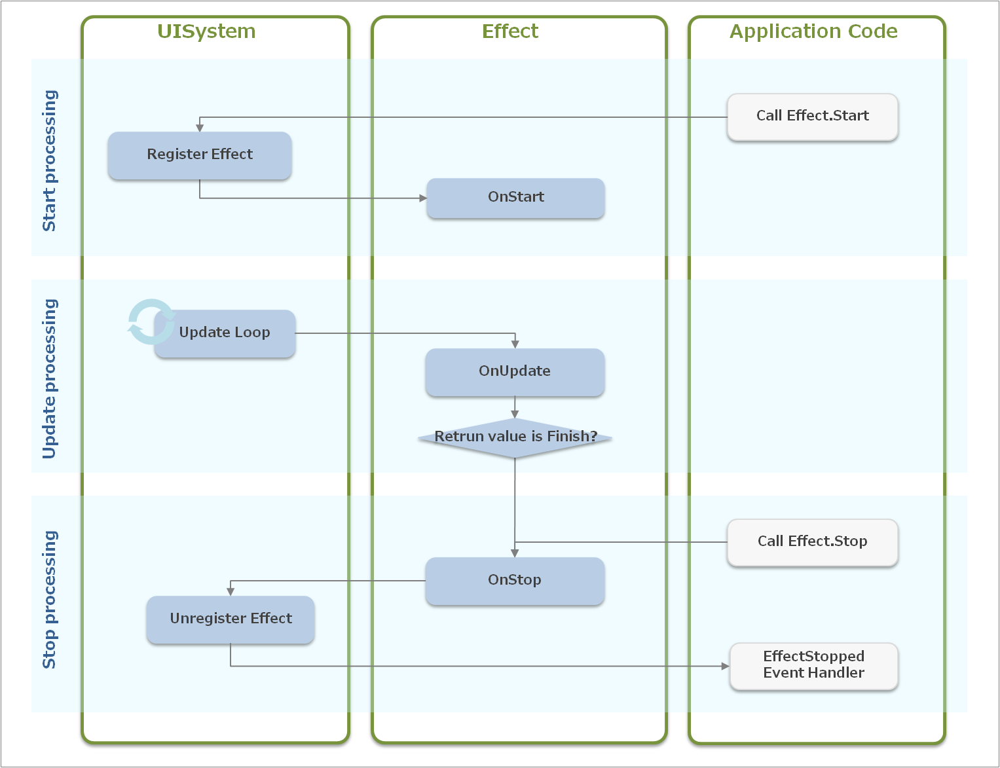
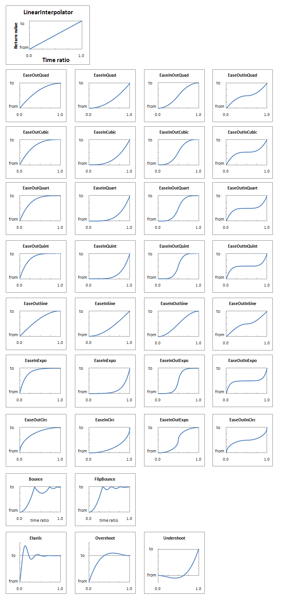

This chapter describes how to create custom effects.
The source code of the UI Toolkit is also included in the SDK, so refer to that as well.
Contents
First, the life-cycle of Effect (Figure 1) will be explained.
Figure 1 Effect Life-cycle
The processing of Effect progresses along the following three steps.
Start processing
The Effect.Start method must be called to start the Effect operation. The following processing is performed within the Effect.Start method.
- Register Effect to UISystem
- Call the Effect.OnStart handler
Frame-by-frame processing
When Effect is registered to UISystem, the following update processing is performed within the UISystem.Update method.
- Call the Effect.OnUpdate handler
- Determine the return value of the Effect.OnUpdate handler and perform termination processing (as needed)
Termination processing
When the return value of Effect.OnUpdate is Finish or the Effect.Stop method is called, the following termination processing is performed.
- Call the Effect.OnStop handler
- Unregister the Effect from UISystem
- Issue the EffectStopped event
After the start processing, the frame update processing may be performed before and after rendering is performed. In the case of the former, this is done when the Effect.Start method is called with the Scene.OnUpdate or Widget.OnAnimation method. And in the case of the latter, this is done when the Effect.Start method is called with the Effect.OnUpdate or Widget.Render method.
To create a custom effect, a derivative class of the Effect class must be created and the following methods must be overridden.
OnStart
After a custom effect is registered to UISystem, describe the processing at the time of initialization. Describe this so that rendering is performed correctly even if rendering is performed before OnUpdate is executed.OnUpdate
Describe the update processing of the custom effect. This is called for each frame, and the elapsed time (in milliseconds) since the last update is stored in the elapsedTime argument. The TransitionUpdateResponse return value must be used to specify either to continue the effect (TransitionUpdateResponse.Continue) or terminate the effect (TransitionUpdateResponse.Finish).OnStop
Describe the termination processing of the custom effect. Describe this so that the effect is terminated in the correct state even if it is terminated midway.
IsPlaying property
This property calls OnStart and indicates whether an animation is currently playing.Widget property
This retains the effect-target widget. This property does not have to be used if a process is running in the background using the Effect class. Define separate properties when the effect is for multiple widgets or the effect is for UIElement.TotalElapsedTime property
This retains the elapsed time (in milliseconds) since OnStart was called.EffectStopped event handler
This event handler is called when OnStop is called.
The Transition life-cycle is nearly the same as the Effect life-cycle (Figure 2).

Figure 2 Transition Life-cycle
Start processing
When the UISystem.SetScene method is called, the following processing is performed. - The Transition is registered to UISystem. - The transition-target scene is set to NextScene. - A setting is made so as not to distribute an event to CurrentScene or NextScene (The scene.IgnoreEvent property is set to true.) - The Transition.OnStart method is called.
Frame-by-frame processing
After UISystem.SetScene is called, the following processing is performed in the UISystem.Update method. - Transition.OnUpdate is called. - The return value of Transition.OnUpdate is determined, and if the transition is to be terminated, then termination processing is performed.
Termination processing
If the return value of Transition.OnUpdate is TransitionUpdateResponse.Finish or another screen is the set scene, then the following processing is performed. - The Transition.OnStop method is called. - Set NextScene to CurrentScene. - Resume distribution of the event to CurrentScene. - The Transition is unregistered from UISystem. - Issue a TransitionStopped event.
To create a custom transition, a derivative class of the Transition class must be created and the following methods must be overridden.
OnStart
Describe the processing when starting the custom transition. Specify the rendering order during the update processing of the transition, as needed. The rendering order can be specified with the TransitionDrawOrder enumeration.OnUpdate
Describe the update processing of the custom transition. The elapsedTime argument retains the elapsed time (in milliseconds) from the previous update. The return value must be used to specify either to continue the transition (TransitionUpdateResponse.Update) or terminate the transition (TransitionUpdateResponse.Finish).OnStop
Describe the processing when the custom transition is stopped. Describe this so that the transition is terminated in the correct state even if it is terminated midway.
Normally, only one scene can be displayed, -but when the update processing of a transition is being executed, CurrentScene (the transition-source scene), NextScene (the transition-target scene), and TransitionUIElement can be displayed.
TransitionUIElement property
This RootUIElement does not belong to a scene of either a transition source or target and can only be used during execution of the transition. To render a certain UIElement only during update processing of a transition, add the UIElement as a child element of this TransitionUIElement. To provide an effect that textures the scene of a transition source or target, for example, add the UIElement for rendering that texture to the child element of TransitionUIElement.TransitionDrawOrder property
This property sets the three rendering orders of CurrentScene, NextScene, and TransitionUIElement. Specify this property using the TransitionDrawOrder enumeration.TransitionStopped event handler
This event handler is called when a screen transition ends (when OnStop is called).
Several static interpolation functions are provided in AnimationUtility, and these can be used for animation.
The following is a usage example of an interpolation function.
widget.X = AnimationUtility.EaseOutQuadInterpolator(fromPosX, toPosX, time / totalTime);Each interpolation function of AnimationUtility is shown in Figure 3.
Figure 3 AnimationUtility Interpolation Functions